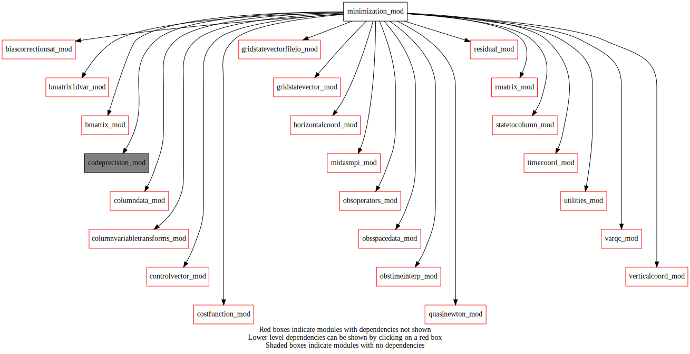
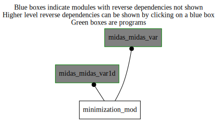

Dependency Diagrams:
 Direct Dependency Diagram¶
 Reverse Dependency Diagram¶
Description
MODULE minimization_mod (prefix=’min’ category=’1. High-level functionality’)
- Purpose
Minimization for variational assimilation, including the subroutine that evaluates the cost function and its gradient.
Quick access
- Variables
- Routines
dcanab(),dcanonb(),dscalqn(),grtest2(),hessianio(),min_minimize(),min_setup(),min_writehessian(),prscal(),quasinewtonminimization(),simvar()Needed modules
codeprecision_mod: MODULE codePrecision_mod (prefix=’pre’ category=’8. Low-level utilities and constants’)
timecoord_mod: MODULE timeCoord (prefix=’tim’ category=’7. Low-level data objects’)
obstimeinterp_mod: MODULE obsTimeInterp_mod (prefix=’oti’ category=’4. Data Object transformations’)
verticalcoord_mod: MODULE verticalcoord (prefix=’vco’ category=’7. Low-level data objects’)
columndata_mod: MODULE columnData_mod (prefix=’col’ category=’6. High-level data objects’)
obsspacedata_mod: MODULE obsSpaceData_mod (prefix=’obs’ category=’6. High-level data objects’)
controlvector_mod: MODULE controlVector_mod (prefix=’cvm’ category=’6. High-level data objects’)
midasmpi_mod: MODULE midasMpi_mod (prefix=’mmpi’ category=’8. Low-level utilities and constants’)
horizontalcoord_mod: MODULE HorizontalCoord_mod (prefix=’hco’ category=’7. Low-level data objects’)
gridstatevector_mod: MODULE gridStateVector_mod (prefix=’gsv’ category=’6. High-level data objects’)
gridstatevectorfileio_mod: MODULE gridStateVectorFile_mod (prefix=’gio’ category=’4. Data Object transformations’)
bmatrix_mod: MODULE BMatrix_mod (prefix=’bmat’ category=’2. B and R matrices’)
bmatrix1dvar_mod: MODULE bmatrix1DVar_mod (prefix=’bmat1D’ category=’2. B and R matrices’)
statetocolumn_mod: MODULE stateToColumn (prefix=’s2c’ category=’4. Data Object transformations’)
varqc_mod: MODULE varqc (prefix=’vqc’ category=’1. High-level functionality’)
rmatrix_mod: MODULE rMatrix_mod (prefix=’rmat’ category=’2. B and R matrices’)
costfunction_mod: MODULE costfunction_mod, (prefix=”cfn” category=’5. Observation operators’)
residual_mod: MODULE residual_mod (prefix=’res’ category=’1. High-level functionality’)
obsoperators_mod: MODULE obsOperators_mod (prefix=’oop’ category=’5. Observation operators’)
quasinewton_mod: MODULE quasinewton_mod (prefix=’qna’ category=’1. High-level functionality’)
utilities_mod: MODULE utilities_mod (prefix=’utl’ category=’8. Low-level utilities and constants’)
biascorrectionsat_mod: MODULE biasCorrectionSat_mod (prefix=”bcs” category=’1. High-level functionality’)
columnvariabletransforms_mod: MODULE columnVariableTransforms (prefix=’cvt’ category=’4. Data Object transformations’)Variables
Subroutines and functions
- subroutine minimization_mod/min_setup(nvadim_mpilocal_in, hco_anl_in[, onedvarmode_opt[, varqc_opt[, nwoqcv_opt]]])¶
- Purpose
Reading NAMMIN namelist to setup variables for minimization.
- Arguments
nvadim_mpilocal_in [integer ,in]
hco_anl_in [struct_hco ,in,pointer]
- Options
onedvarmode_opt [logical ,in,]
varqc_opt [logical ,out,]
nwoqcv_opt [integer ,out,]
- Called from
- Call to
- subroutine minimization_mod/min_minimize(outerloopindex_in, columntrlonanlinclev, obsspacedata, controlvectorincrsum, vazx, numitermaxinnerloop[, deallochessian_opt[, isminimizationfinalcall_opt[, numitermaxinnerloopused_opt]]])¶
- Purpose
Minimizing cost function to get the increments. The maximum number of inner-loop iterations is set to nitermax if the namelist variable nitermax is provided. Otherwise, it is set to the numIterMaxInnerLoop supplied by the calling subroutine/program. numIterMaxInnerLoopUsed_opt is passing the maximum number of inner-loop iterations to the calling subroutine/program.
- Arguments
outerloopindex_in [integer ,in]
columntrlonanlinclev [struct_columndata ,inout]
obsspacedata [struct_obs ,inout]
controlvectorincrsum (*) [real ,inout,target]
vazx (*) [real ,inout]
numitermaxinnerloop [integer ,in]
- Options
deallochessian_opt [logical ,in,]
isminimizationfinalcall_opt [logical ,in,]
numitermaxinnerloopused_opt [integer ,out,]
- Called from
- Call to
utl_tmg_start(),utl_abort(),col_setvco(),col_getvco(),col_allocate(),col_getnumcol(),oti_timebinning(),quasinewtonminimization(),col_deallocate(),utl_tmg_stop()
- subroutine minimization_mod/quasinewtonminimization(columnanlinc, columntrlonanlinclev, obsspacedata, vazx)¶
- Purpose
3D/En-VAR minimization
- Arguments
columnanlinc [struct_columndata ,target]
columntrlonanlinclev [struct_columndata ,target]
obsspacedata [struct_obs ,target]
vazx (*) [real ]
- Called from
- Call to
vqc_setup(),utl_abort(),tim_getdatestamp(),hessianio(),utl_tmg_start(),grtest2(),utl_tmg_stop(),simvar(),prscal(),qna_n1qn3(),obs_numheader(),obs_prnthdr(),obs_prntbdy()
- subroutine minimization_mod/min_writehessian(vazx)¶
- Arguments
vazx (*) [real ]
- Called from
- Call to
utl_tmg_start(),hessianio(),tim_getdatestamp(),utl_tmg_stop()
- subroutine minimization_mod/simvar(na_indic, na_dim, da_v, da_j, da_gradj)¶
- Purpose
To implement the Variational solver as described in Courtier, 1997, Dual Formulation of Four-Dimentional Variational Assimilation, Q.J.R., pp2449-2461.
- Arguments
- Arguments
na_indic [integer ] ::
=1 No action taken
- =2 Same as 4 (compute J and gradJ) but do not interrupt
timer of the minimizer.
=3 Compute Jo and gradJo only.
=4 Both J(u) and its gradient are computed.
Note
1 and 4 are reserved values for call back from m1qn3. For direct calls, use a value other than 1 and 4.
na_dim [integer ] :: Control-vector dimension, forecast-error covariance space
da_v (na_dim) [real ] :: Control variable, forecast-error covariance space
da_j [real ] :: Cost function of the Variational algorithm
da_gradj (na_dim) [real ] :: Gradient of the Variational Cost funtion
- Called from
- Call to
utl_tmg_stop(),mmpi_allreduce_sumreal8scalar(),bmat1d_sqrtb(),cvt_transform(),gsv_isallocated(),col_getvco(),gsv_allocate(),gio_readmaskfromfile(),bmat_sqrtb(),s2c_tl(),utl_tmg_start(),oop_htl(),res_compute(),bcs_calcbias_tl(),rmat_rsqrtinverseallobs(),cfn_calcjo(),vqc_nltl(),cfn_sumjo(),vqc_ad(),res_computead(),col_zero(),oop_had(),s2c_ad(),bcs_calcbias_ad(),bmat1d_sqrtbt(),bmat_sqrtbt()
- subroutine minimization_mod/dscalqn(kdim, px, py, ddsc)¶
- Purpose
Interface for the inner product to be used by the minimization subroutines QNA_N1QN3.
- Arguments
i : kdim i : px,py o : ddsc i : kzs i : pzs i : ddzs
- Arguments
kdim [integer ] :: dimension of the vectors
px (kdim) [real ] :: vector for which <PX,PY> is being calculated
py (kdim) [real ] :: vector for which <PX,PY> is being calculated
ddsc [real ] :: result of the inner product
- Call to
- subroutine minimization_mod/prscal(kdim, px, py, ddsc)¶
- Purpose
To evaluate the inner product used in the minimization
- Arguments
i : KDIM i : PX, PY o : DDSC
- Arguments
kdim [integer ] :: dimension of the vectors
px (kdim) [real ] :: vector for which <PX,PY> is being calculated
py (kdim) [real ] :: vector for which <PX,PY> is being calculated
ddsc [real ] :: result of the inner product
- Called from
- Call to
- subroutine minimization_mod/dcanab(kdim, py, px)¶
- Purpose
Change of variable associated with the canonical inner product:
PX = L^-1 * Py with L related to the inner product
<PX,PY> = PX^t L^t L PY
(see the modulopt documentation aboutn DTCAB)
NOTE: L is assumed to be the identity!
- Arguments
kdim [integer ]
py (kdim) [real ]
px (kdim) [real ]
- subroutine minimization_mod/dcanonb(kdim, px, py)¶
- Purpose
Change of variable associated with the canonical inner product:
PY = L * PX with L related to the inner product
<PX,PY> = PX^t L^t L PY
(see the modulopt documentation about DTONB)
- Arguments
kdim [integer ]
px (kdim) [real ]
py (kdim) [real ]
- subroutine minimization_mod/hessianio(cfname, status, nsim, kbrpstamp, zeps1, zdf1, itertot, isimtot, iztrl, vatra, vazxbar, vazx, llxbar, llvazx, k1gc, imode)¶
- Purpose
Read-Write Hessian and increment (possibly for outer loop) on a file
- Arguments
i cfname
i status
i nsim
io kbrpstamp
i zeps1
i zdf1
i itertot
i isimtot
i iztrl
i vatra
i vazxbar
i vazx
i llxbar
i llvazx
i k1gc
o imode
- Arguments
cfname [character ] :: precon file
status [integer ] :: = 0 if READ, = 1 if WRITE
nsim [integer ] :: Number of simulations in QNA_N1QN3
kbrpstamp [integer ] :: Date
zeps1 [real ] :: Parameter in QNA_N1QN3
zdf1 [real ] :: Parameter in QNA_N1QN3
itertot [integer ] :: Parameter in QNA_N1QN3
isimtot [integer ] :: Parameter in QNA_N1QN3
iztrl (5) [integer ,target] :: Localisation parameters for Hessian
vatra (nmtra) [real ,target] :: Hessian
vazxbar (nvadim_mpilocal) [real ,target] :: Vazx of previous loop
vazx (nvadim_mpilocal) [real ,target] :: Current state of the minimization
llxbar [logical ] :: read in vaxzbar if dates are compatible
llvazx [logical ] :: Logical to read vazx
k1gc [integer ] :: Minimizer ID (2: m1qn2, 3: m1qn3)
imode [integer ] :: If status=0, set imode=0 (no prec) or 2 (prec)
- Called from
- Call to
utl_tmg_start(),utl_abort(),bmat_reducetompilocal_r4(),bmat_reducetompilocal(),bmat_expandtompiglobal_r4(),bmat_expandtompiglobal(),utl_tmg_stop()
- subroutine minimization_mod/grtest2(simul, na_dim, da_x0, na_range)¶
- Purpose
To compare the variation of the functional against what the gradient gives for small changes in the control variable. This test should be accurate for values as small as DLALPHA = SQRT(machine precision). (see Courtier, 1987)
- Arguments
- Arguments
na_range [integer ,in] :: the test will be carried over values of ALPHA ranging between 10**(-NA_RANGE) < ALPHA < 0.1
simul [external] :: simulator: return cost function estimate and its gradient
na_dim [integer ,in,] :: Size of the control vector
da_x0 (na_dim) [real ,in] :: Control vector
Needed modules
grtest2__user__routines
- Called from
- Call to
{kind=link}
{kind=link}